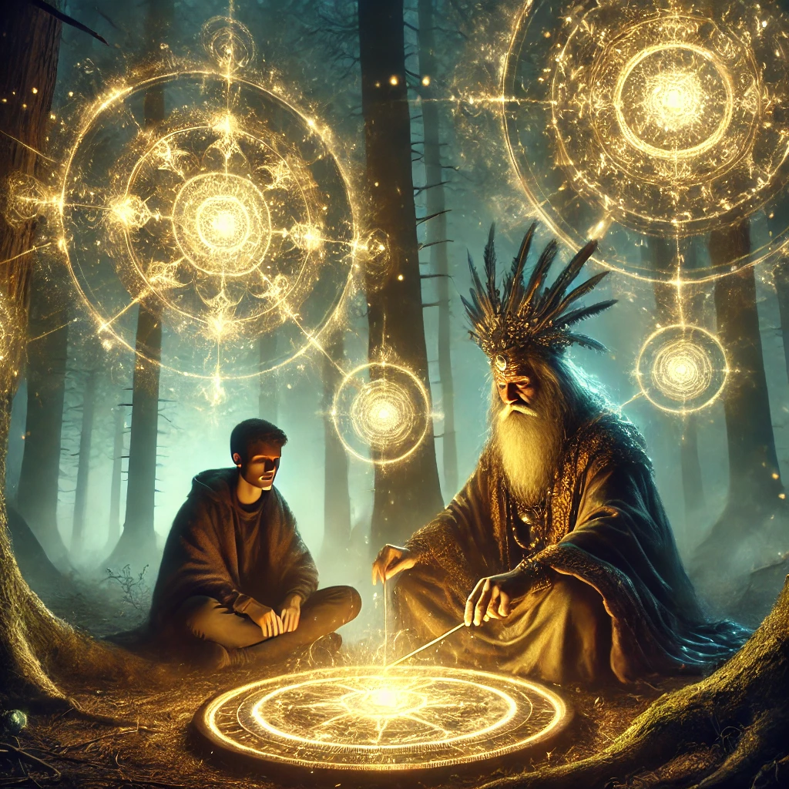

The shaman sits cross-legged beside you, their presence both grounding and otherworldly. Their gnarled hands trace the golden glyphs on the compass, their eyes glowing faintly as if reading a language older than time itself.
"These glyphs are not instructions," the shaman begins, their voice resonant and calm. "They are reflections—of the past, the future, and the infinite cycles of your soul."
You watch as the glyphs begin to shimmer, revealing shifting images: fractals of light, shadowy forms, and glimpses of unfamiliar landscapes. The shaman turns to you, their gaze piercing:
“What you see is not fixed. It is your interpretation that gives it meaning. Let us explore what these glyphs awaken within you.”
They guide your focus to three distinct glyphs, each radiating a unique energy. The choice is yours.

Which glyph will you focus on?